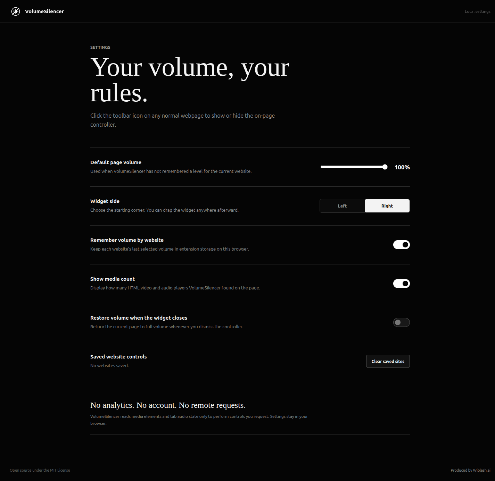

Stealth mode
Fine-tune stubbornly loud media between 0% and 1% in precise 0.05-point steps.
 VolumeSilencer
VolumeSilencer
A browser utility by Wiplash Labs
Drop HTML media below 1%, amplify compatible players up to 500%, mute the active tab, or quiet every other tab from one compact on-page widget.
Night Signal Studio184K subscribers
VolumeSilencernight.signal×Three ranges, one control
Fine-tune stubbornly loud media between 0% and 1% in precise 0.05-point steps.
Use the familiar 0–100% range with quick presets for everyday listening.
Amplify compatible HTML media up to 500% using local browser audio processing.
Expand only when you need to mute this tab, quiet the others, or silence the window.

Set it once
Choose a default volume, remember levels by website, move the compact widget where it belongs, and expand window controls only when needed.
Private by default
VolumeSilencer has no analytics, account, advertising SDK, backend, or remote API. Settings and saved website volume levels remain in extension storage on your device.
Read the privacy policy